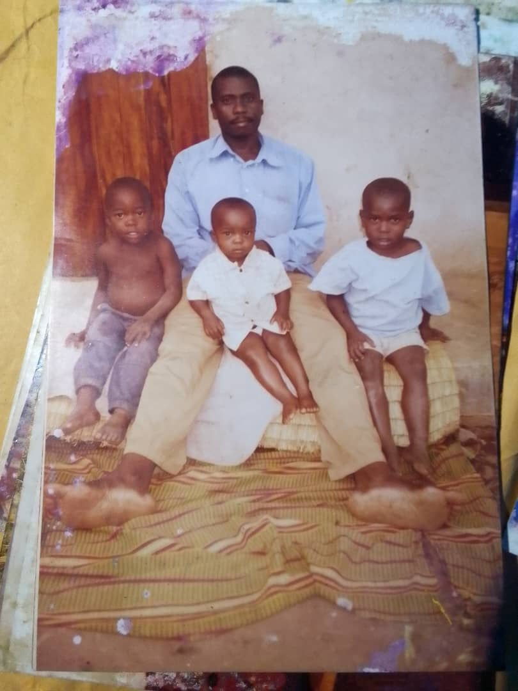

Welcome to my life journey. Here’s a story of my growth, experiences, and reflections as I turn 24.
Hi, I'm BUSINGE CHRICENT. My story starts from a small town in mid-western Uganda called Kagadi.
I am a son to loving parents, Mr. Musasizi Furujensio and Ms. Caroline Katusabe.
I am born with 4 more;
Aheebwa Monica
Muganyizi Geoffrey
Atuha Gerald
Wakisa Rosette.
I am number four of these.
To know more about me, Read below...
I am a Born Again Christian and my faith is the cornerstone of my life. I priotize prayer,seeking God's guidance and wisdom in every aspect. Music, a universal language, brings me joy and inspiration. Staying physically fit through regular workouts enables me to serve others and honor my temple. Reading broadens my perspective, fueling personal growth. Proffesionally, coding isn't just a skill, it's my passion. I am driven, deligent and commited to excellence.
My first year was more of a kaleidoscope of sensations, emotions and milestones. From the warmth of my mother's embrace to th sound of my fathers soothing voice, I began to discover the world. First cry, smiles, laughters and words marked my growth, while tiny hands and teeth explored textures and temperatures. sorrounded by love, i took tentative steps fueled by curiosity and wonder. This foundational year shaped me, layin the ground work of fro a lifetime of learning, relationships and adventure.
Three-year-old me was a bundle of energy, a whirlwind of curiosity, and a staunch defender of my personal style. Refusing to don shirts, I asserted my independence and unique taste, a testament to my strong personality. My loving father, ever patient and supportive, nurtured my individuality while gently guiding me toward societal norms. He understood my resistance to shirts might stem from a desire for comfort or a sense of control over my own body.
Chricent Starts School. Definitely i started school in my forth year, that was 2004, at the mighty school Three Hills Nursery And Primary School, Unfortunately Nolonger in existence. The guys made me love school because of giving me sweets every day and guest wat, i was the first in class, a class that had both Baby and Top studying together. Success started in my life... I remember mum cook for me my best meal by then, Matooke and Gnut paste. I enjoyed my day.
And Growth was a Must, I grew as regardless of the lifetrials then, I remenber hawking cabbage, yellow bananas, pan cakes, greens on Kagadi streets.What a memory! I finished my Primary at Kagadi Parent's School, The mighty one,and I was 13. Guess What, i enjoy my last day in school, ofcourse i used to perform, i remember my mock first grade then, 12 aggregates, we used to rock it with my buddys, eating rabbit meat with my bro, Gerald, My gangoz then, Kato, Comrade, Anselm, Muhindi, James Muhwezi, Bob Nicholas, Bruno, as in the courtessy. The last day, we played football after exams and took a photo with Bruno. Facinating Childish. In my vacation, sold pancakes, life was turning around at home, and guess what,i got all my Secondary requirements there. And I joined St Andrea Kaahwa's Schools Kooki Haibaale in 2014, Form one, i met FACINATING and loving people there. MY buddys of course, Mr. Joram Semakula, Joel Peter Kakooza, Agnes Nakayiga and many more highschool friends, love you guys.
At 17, I finished Olevel, WITH A FIRST GRADE, always excellent. And still joined Alevel. Thanks to Fortportal SS for the scholarship. Life had gone out of hand here, but we thrived through. And i finished my Aleve in 2019, at 19. sScored good still, to qualify for university, with a dream of bein a sofware engineer, became a teacher instaed. I remember lockdown, everyone has a personal story of it. Personally I met God during those days, Thanks to Phaneroo and Watoto churches for revealing christ. Still At university, got to know God more, and suprisingly, I am now a Graduate of Mbarara University Of Science And Technology, Bsc(Ed)-Physical(PHYSICS/MATHEMATICS) I am now a man. Working on My dream.
In the 24-year Journey, i got to know the following;
"Life is a series of choices and not chances, our task is to choose chancefully from every Chancefull choice we get. "
"Everything is possible in life, just focus and pray"
"Every one needs a relationship with God, You will discover your self"
"Life is about learning and unlearning DOctrines"
"Regardless of the circumstances at hand, you have to make it"
"Pray,Pray and Pray"
Dreams never die, I am embarking on the journey of IT, with a goal of transforming my generation into creativity to match the trending technologies.
IT IS POSSIBLE!!